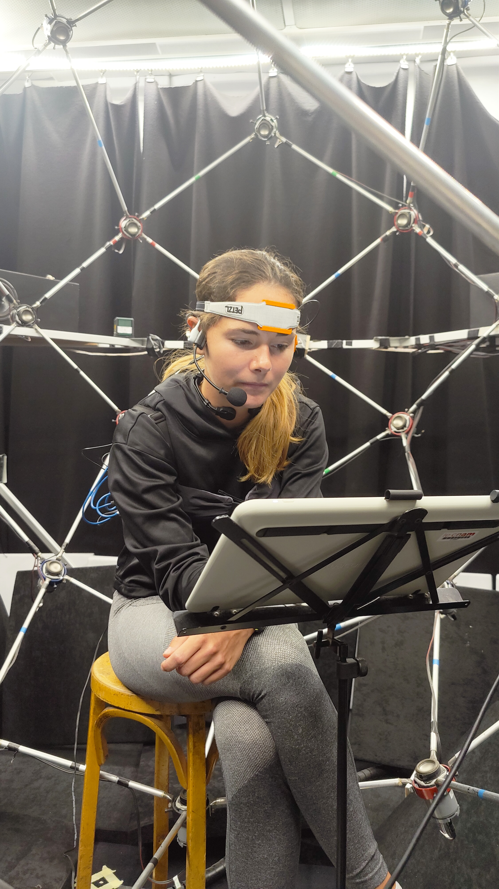
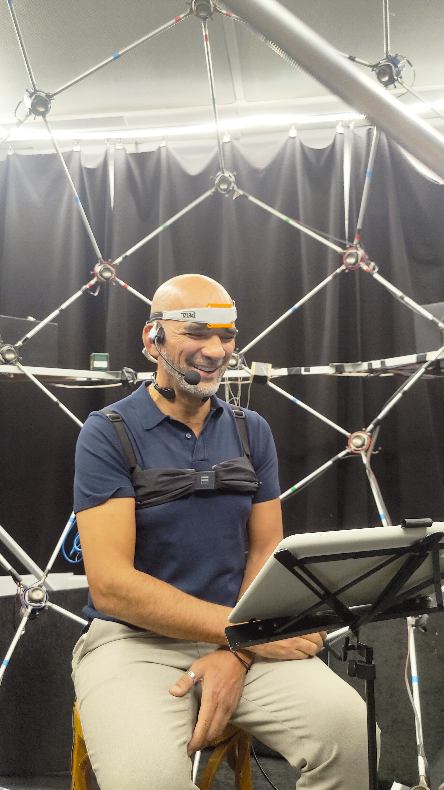
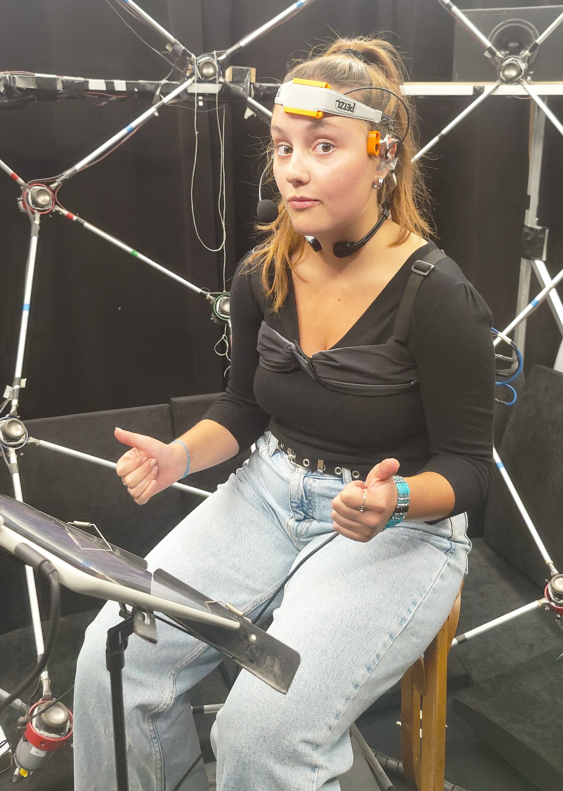
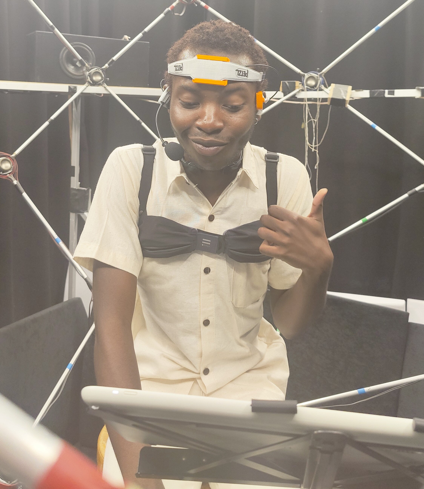

Increasing the intelligibility of speech signals captured with noise-resilient body-conduction microphones
Starting date: December 1, 2021
Funding: ANR (50% ISL/50% Cnam) - AHEAD project
Artificial Intelligence for Health, Physical Models, Transportation and Defense
PhD student: Julien HAURET☆
Director: Éric BAVU☆
Supervisors: Thomas JOUBAUD†, Véronique ZIMPFER†
☆ : Structural Mechanics and Coupled Systems Laboratory, Conservatoire National des Arts et Metiers
† :Department of Acoustics and Soldier Protection, French-German Research Institute of Saint-Louis

Context
Context
Body-Conduction Microphones

Quiet conditions
Reference
In-ear microphone
85dB noise
Reference
In-ear microphone
Degradation
Spectrograms
Degradation
EBEN : Extreme Bandwidth Extension Network
EBEN Results
Qualitative results: EBEN
MUSHRA comparative evaluation
Frugality indicators
| Speech | \[P_{gen}\] | \[P_{dis}\] | \[\tau~\textrm{(ms)}\] | \[\delta~\textrm{(MB)}\] |
|---|---|---|---|---|
| Audio U-net | 71.0 M | \[\emptyset\] | 37.5 | 1117.3 |
| Hifi-GAN v3 | 1.5 M | 70.7 M | 3.1 | 22.2 |
| Seanet | 8.3 M | 56.6 M | 13.1 | 89.2 |
| Streaming Seanet | 0.7 M | 56.6 M | 7.5 | 10.9 |
| EBEN (ours) | 1.9 M | 27.8 M | 4.3 | 20 |
Associated publications and communications
VibraVox




Thank you for your attention
julien.hauret@lecnam.net
References
References - 1
PQMF
- Joseph Rothweiler: Polyphase quadrature filters–a new subband coding technique. In ICASSP 1983.
- Truong Q Nguyen: Near-perfect-reconstruction pseudo-qmf banks. In 1994 IEEE.
- Yuan-Pei Lin & al: A kaiser window approach for the design of prototype filters of cosine modulated filterbanks. In 1998 IEEE.
References - 2
Deep learning
- Marco Tagliasacchi & al: Seanet : A multi-modal speech enhancement network. arXiv preprint, 2020.
- Volodymyr Kuleshov, S Zayd Enam, and Stefano Ermon, “Audio super-resolution using neural nets,” in ICLR (WorkshopTrack), 2017
- Jungil Kong, Jaehyeon Kim, and Jaekyoung Bae, “Hifi-gan: Generative adversarial networks for efficient and high fidelity speech synthesis,” Advances in Neural Information Processing Systems, vol. 33, pp. 17022–17033, 2020.
- Yunpeng Li, Marco Tagliasacchi, Oleg Rybakov, Victor Ungureanu, and Dominik Roblek, “Real-time speech frequency bandwidth extension,” in ICASSP 2021-2021 IEEE nternational Conference on Acoustics, Speech and Signal Processing (ICASSP). IEEE, 2021, pp. 691–695.
- Kundan Kumar, Rithesh Kumar, Thibault de Boissiere, Lucas Gestin, Wei Zhen Teoh, Jose Sotelo, Alexandre de Brebisson, Yoshua Bengio, and Aaron C Courville, “Melgan: Generative adversarial networks for conditional waveform synthesis,” Advances in neural information processing systems, vol. 32, 2019.
- Salimans, T., & Kingma, D. P. (2016). Weight normalization: A simple reparameterization to accelerate training of deep neural networks. Advances in neural information processing systems, 29.
References - 3
Évaluation
- Antony W Rix & al : Perceptual evaluation of speech quality (PESQ)-a new method for speech quality assessment of telephone networks and codecs. In 2001 IEEE.
- Cees H Taal & al: A short-time objective intelligibility measure for time-frequency weighted noisy speech. In 2010 IEEE.
- Jonathan Le Roux & al: Sdr–half-baked or well done ? In ICASSP 2019.
- Yi Luo & al : time-domain audio separation network for real-time, single-channel speech separation. In 2018 IEEE.
- B Series, “Method for the subjective assessment of intermediate quality level of audio systems,” International Telecommunication Union Radiocommunication Assembly, 2014.
- Dan Barry, Qijian Zhang, Pheobe Wenyi Sun, and Andrew Hines, “Go listen: an end-to-end online listening test platform,” Journal of Open Research Software, vol. 9, no. 1, 2021.